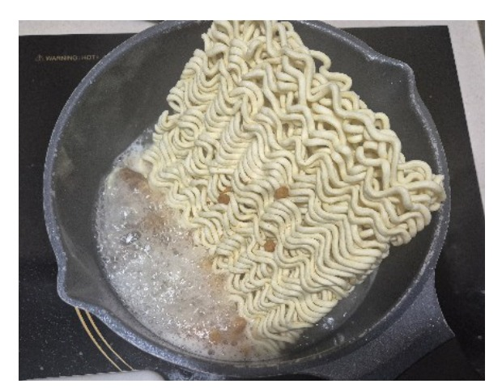
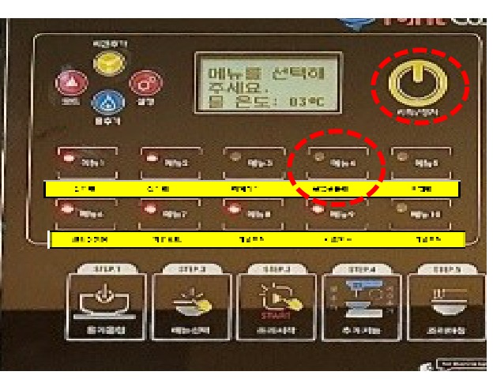
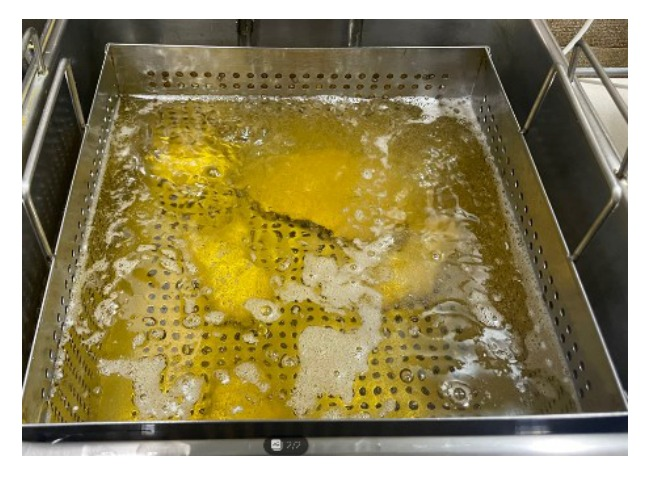
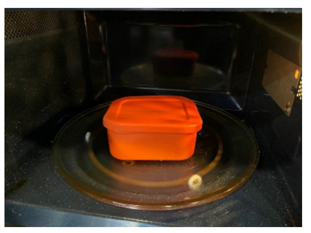
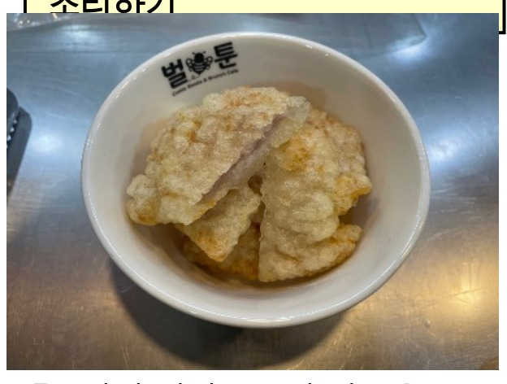
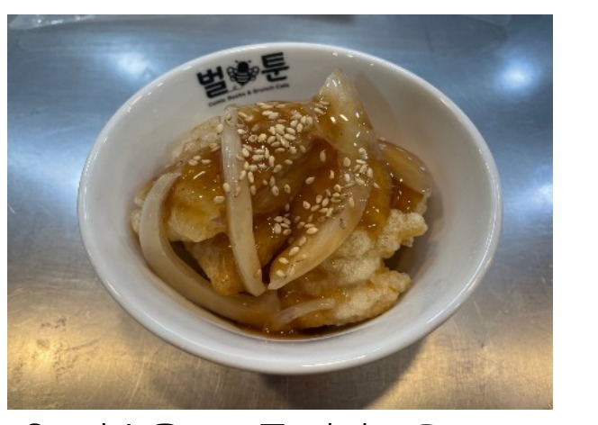
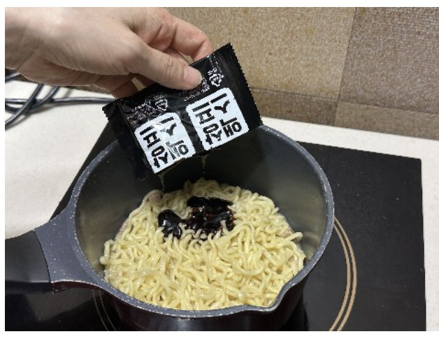
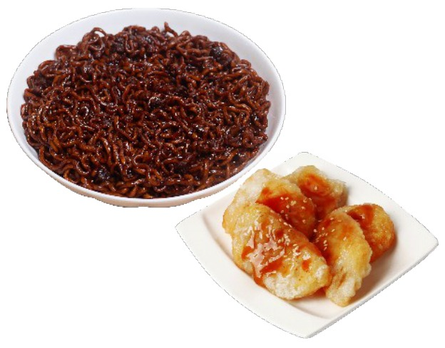

| 메뉴명 | 꿔바르르 |
|---|---|
| 판매가격 | 7,500원 |
| 원재료 | 짜르르, 꿔바로우, 탕수육소스, 양파, 깨 |
| 사용 부자재 | 덮밥접시, 우동국물용기 |
| 메뉴특징 | 짜장면과 꿔바로우의 조화가 이루어진 메뉴 |
※ 제조 후 최대한 빨리 제공할 것.
조리방법

1
냄비에 짜르르 면, 건더기스프를 넣는다.
냄비에 짜르르 면, 건더기스프를 넣는다.

2
라면조리기 위에 올려 [불닭볶음면] 모드 선택 후 [시작/정지] 버튼을 누르고, [시간추가]를 1회 눌러 조리를 시작한다.
라면조리기 위에 올려 [불닭볶음면] 모드 선택 후 [시작/정지] 버튼을 누르고, [시간추가]를 1회 눌러 조리를 시작한다.

3
소분된 꿔바로우 1봉(100g, 3~4개)를 180도 튀김기에서 5분간 튀긴다.
소분된 꿔바로우 1봉(100g, 3~4개)를 180도 튀김기에서 5분간 튀긴다.

4
전자레인지용기에 탕수육소스 50g, 양파슬라이스 10g을 담아 전자레인지에 1분간 데운다.
전자레인지용기에 탕수육소스 50g, 양파슬라이스 10g을 담아 전자레인지에 1분간 데운다.

5
튀긴 꿔바로우의 기름을 털어내고 큰 조각은 반으로 잘라 우동장국 그릇에 담는다.
튀긴 꿔바로우의 기름을 털어내고 큰 조각은 반으로 잘라 우동장국 그릇에 담는다.

6
탕수육소스를 꿔바로우 위에 뿌려주고 참깨를 뿌린다.
탕수육소스를 꿔바로우 위에 뿌려주고 참깨를 뿌린다.

7
짜르르 조리가 완료되면 액상스프를 첨가하여 잘 비벼준 뒤 덮밥접시에 옮겨 담는다.
짜르르 조리가 완료되면 액상스프를 첨가하여 잘 비벼준 뒤 덮밥접시에 옮겨 담는다.

8
짜르르와 미니 꿔바로우를 함께 제공한다. (단무지 제공)
짜르르와 미니 꿔바로우를 함께 제공한다. (단무지 제공)
※ 기존 라면조리기 : [볶음라면] 모드로 조리하기